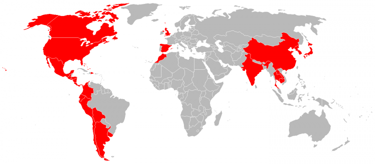

About Erik
I am a 32 year old self motivated hard worker with great attention to detail and quality of work. I am an analytical problem solver who is happy to work in groups or individually. Having lived over seas and travelled to over 30 countries I am fluent in spanish and have experience managing people and overseeing projects in cross cultural settings. In my work I have raised over $200,000.00 for community development work in South America. I love gardening, cooking and spending time with my wife and son.
Spanish Fluency
Front End Skills
HTML CSS JavaScript
Project
Management
Back End Skills
SQL Server C#